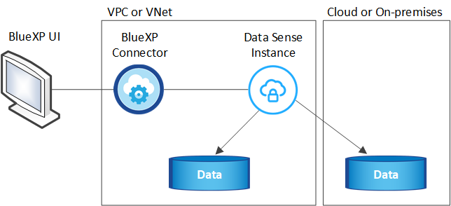
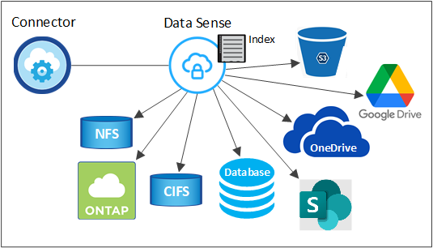

Solicitar cambios en el documento
Solicitar cambios en el documento Editar en GitHub
Editar en GitHub Guía del colaborador
Guía del colaboradorMás información acerca de Cloud Data Sense
Colaboradores
Cloud Data Sense es un servicio de regulación de datos para BlueXP (anteriormente Cloud Manager) que analiza sus fuentes de datos corporativas, tanto en las instalaciones como en el cloud para asignar y clasificar los datos, así como para identificar información privada. Esto puede ayudarle a reducir los riesgos de seguridad y de cumplimiento de normativas, a reducir los costes de almacenamiento y a facilitar los proyectos de migración de datos.
Funciones
Cloud Data Sense usa la inteligencia artificial (IA), el procesamiento de lenguaje natural (NLP) y el aprendizaje automático (ML) para entender el contenido que analiza con el fin de extraer entidades y clasificar el contenido de manera acorde. Esto permite que Data Sense proporcione las siguientes áreas de funcionalidad.
Mantenga el cumplimiento normativo
Data sense proporciona varias herramientas que le ayudan en sus tareas de cumplimiento de normativas. Puede utilizar el sentido de los datos para:
-
Identificación de la Información personal de identificación (PII).
-
Identificar un amplio alcance de información personal confidencial según las normativas de privacidad del RGPD, la CCPA, el PCI y la HIPAA.
-
Responda a las solicitudes de acceso de sujetos de datos (DSAR) en función del nombre o la dirección de correo electrónico.
-
Identifique si los identificadores únicos de las bases de datos se encuentran en los archivos de otros repositorios; básicamente, cree su propia lista de "datos personales" que se identifican en los análisis de detección de datos.
-
Notificar a determinados usuarios por correo electrónico cuando los archivos contienen un PII determinado (definir este criterio mediante "Normativas") para que pueda decidir sobre un plan de acción.
Refuerce la seguridad
La detección de datos puede identificar datos que podrían estar en riesgo de acceder a ellos por motivos criminales. Puede utilizar el sentido de los datos para:
-
Identifique todos los archivos y directorios (recursos compartidos y carpetas) con permisos abiertos que se exponen a toda la organización o al público.
-
Identifique los datos confidenciales que se encuentran fuera de la ubicación inicial dedicada.
-
Cumpla con las políticas de retención de datos.
-
Utilice Policies para notificar automáticamente al personal de seguridad sobre nuevos problemas de seguridad y que puedan actuar inmediatamente.
-
Agregue etiquetas personalizadas a los archivos (por ejemplo, "hay que mover") y asigne un usuario de BlueXP para que esa persona pueda tener actualizaciones en los archivos.
-
Ver y modificar "Etiquetas de Azure Information Protection (AIP)" en sus archivos.
Optimice la utilización del almacenamiento
El sentido de los datos proporciona herramientas que pueden ayudar a obtener el coste total de propiedad (TCO) de su almacenamiento. Puede utilizar el sentido de los datos para:
-
Aumente la eficiencia del almacenamiento identificando datos duplicados o no relacionados con la empresa. Puede utilizar esta información para decidir si desea mover o eliminar determinados archivos.
-
Elimine los archivos que parezcan poco seguros o demasiado arriesgados a dejar en el sistema de almacenamiento o que haya identificado como duplicados. Puede utilizar Policies para eliminar automáticamente los archivos que coincidan con determinados criterios.
-
Ahorre en costes de almacenamiento identificando los datos inactivos que puede establecer niveles en almacenamiento de objetos más económico. "Obtenga más información sobre la organización en niveles en sistemas Cloud Volumes ONTAP". "Obtenga más información acerca de la organización en niveles desde sistemas ONTAP en las instalaciones".
Acelere la migración de datos
El sentido de los datos se puede utilizar para analizar sus datos en las instalaciones antes de migrarlos al cloud público o privado. Puede utilizar el sentido de los datos para:
-
Consulte el tamaño de los datos y si alguno de ellos contiene información confidencial antes de moverlos.
-
Filtre los datos de origen (según más de 25 tipos de criterios) para que pueda mover sólo los archivos necesarios al destino. No se mueven los datos innecesarios.
-
Mueva, copie y sincronice automáticamente y continuamente solo los datos necesarios en el repositorio en el cloud.
Orígenes de datos compatibles
Cloud Data Sense puede analizar y analizar datos estructurados y no estructurados de los siguientes tipos de fuentes de datos:
NetApp:
-
Cloud Volumes ONTAP (implementado en AWS, Azure o GCP)
-
Clústeres de ONTAP en las instalaciones
-
StorageGRID
-
Azure NetApp Files
-
Amazon FSX para ONTAP
-
Cloud Volumes Service para Google Cloud
No NetApp:
-
Isilon de Dell EMC
-
Pure Storage
-
Nutanix
-
Cualquier otro proveedor de almacenamiento
Cloud:
-
Amazon S3
-
Azure Blob
-
Google Cloud Storage
-
OneDrive
-
SharePoint online
-
SharePoint en las instalaciones (SharePoint Server)
-
Unidad de Google
Bases de datos:
-
Servicio de bases de datos relacionales de Amazon (Amazon RDS)
-
MongoDB
-
MySQL
-
Oracle
-
PostgreSQL
-
SAP HANA
-
Servidor SQL (MSSQL)
Data sense admite las versiones 3.x, 4.0 y 4.1 de NFS, y las versiones 1.x, 2.0, 2.1 y 3.0 de CIFS.
Coste
-
El coste de utilizar Cloud Data Sense depende de la cantidad de datos que se van a analizar. Los primeros 1 TB de datos que analiza Data Sense en un espacio de trabajo BlueXP son gratuitos durante 30 días. Esto incluye todos los datos de todos los entornos de trabajo y orígenes de datos. Debe haber una suscripción a AWS, Azure o GCP Marketplace o una licencia con su propia licencia de NetApp para seguir analizando datos después de ese punto. Consulte "precios" para obtener más detalles.
-
La instalación de Cloud Data Sense en el cloud requiere la puesta en marcha de una instancia de cloud, lo cual resulta en cargos del proveedor de cloud en el que está puesta en marcha. Consulte el tipo de instancia que se pone en marcha en cada cloud proveedor. No tiene coste si instala Data Sense en un sistema local.
-
Cloud Data Sense requiere que haya implementado un conector BlueXP. En muchos casos ya tiene un conector debido a otros servicios y almacenamiento que está utilizando en BlueXP. La instancia de Connector representa cargos del proveedor de cloud en el que se ha puesto en marcha. Consulte "tipo de instancia que se pone en marcha para cada proveedor de cloud". No hay costo si instala el conector en un sistema local.
Costes de transferencia de datos
Los costes de la transferencia de datos dependen de su configuración. Si la instancia de Cloud Data Sense y el origen de datos están en la misma zona de disponibilidad y región, no hay costes de transferencia de datos. Pero si el origen de los datos, como un sistema Cloud Volumes ONTAP o un bloque S3, está en una región o zona de disponibilidad diferente, su proveedor cloud le cobrará los costes de transferencia de datos. Consulte estos enlaces para obtener más información:
La instancia de Cloud Data Sense
Al implementar detección de datos en la nube, BlueXP despliega la instancia en la misma subred que Connector. "Más información sobre conectores."

Tenga en cuenta lo siguiente acerca de la instancia predeterminada:
-
En AWS, Cloud Data SENSE se ejecuta en una "instancia m5.4xlarge" Con un disco GP2 de 500 GB. La imagen del sistema operativo es Amazon Linux 2 (Red Hat 7.3.1).
En regiones donde no está disponible m5.4xLarge, Data Sense se ejecuta en una instancia m4.4xLarge en su lugar.
-
En Azure, Cloud Data Sense se ejecuta en una "VM Standard_D16s_v3" Con un disco de 512 GB. La imagen del sistema operativo es CentOS 7.8.
-
En GCP, Cloud Data Sense se ejecuta en una "n2-Standard-16 VM" Con un disco persistente estándar de 512 GB. La imagen del sistema operativo es CentOS 7.9.
En regiones donde no está disponible n2-standard-16, Data Sense se ejecuta en un equipo virtual n2d-standard-16 o n1-standard-16.
-
La instancia se denomina CloudCompliance con un hash generado (UUID) concatenado. Por ejemplo: CloudCompliance-16bb6564-38ad-4080-9a92-36f5fd2f71c7
-
Sólo se despliega una instancia de detección de datos por conector.
También puede poner en marcha Data Sense en un host Linux en sus instalaciones o en un host de su proveedor de cloud preferido. El software funciona exactamente de la misma manera, independientemente del método de instalación que elija. Las actualizaciones del software Data Sense se automatizan siempre que la instancia tenga acceso a Internet.

|
La instancia debe permanecer en ejecución en todo momento debido a que Cloud Data Sense analiza continuamente los datos. |
Con un tipo de instancia más pequeño
Puede implementar la detección de datos en un sistema con menos CPU y menos RAM, pero hay algunas limitaciones al utilizar estos sistemas menos potentes.
| Tamaño del sistema | Especificaciones | Limitaciones |
|---|---|---|
Grande (predeterminado) |
16 CPU, 64 GB DE RAM, 500 GB DE SSD |
Ninguno |
Mediano |
8 CPU, 32 GB DE RAM, 200 GB DE SSD |
El análisis es más lento y sólo puede analizar un millón de archivos. |
Pequeño |
8 CPU, 16 GB DE RAM, 100 GB DE SSD |
Las mismas limitaciones que "Medio", más la capacidad de identificar "nombres de asunto de los datos" los archivos internos están desactivados. |
Al implementar Data Sense en el cloud, envíe un correo electrónico a ng-contact-data-sense@netapp.com para obtener ayuda si desea usar uno de estos sistemas más pequeños. Tendremos que trabajar con usted para poner en marcha estas configuraciones de cloud más pequeñas.
Al poner en marcha la detección de datos en las instalaciones, solo tiene que utilizar un host Linux con las especificaciones más pequeñas. No necesita ponerse en contacto con NetApp para obtener ayuda.
Cómo funciona el Cloud Data Sense
En un entorno de alto nivel, Cloud Data Sense funciona así:
-
Se despliega una instancia de Data Sense en BlueXP.
-
Puede activar la asignación de alto nivel o el análisis de alto nivel en uno o más orígenes de datos.
-
El sentido de los datos analiza los datos mediante un proceso de aprendizaje de IA.
-
Utilice las consolas y herramientas de informes que se proporcionan con el fin de ayudarle en sus esfuerzos de cumplimiento de normativas y gobierno.
Cómo funcionan las exploraciones
Después de habilitar Cloud Data SENSE y seleccionar los volúmenes, bloques, esquemas de base de datos, o los datos de usuario de OneDrive o SharePoint que desea analizar, comienza de inmediato a analizar los datos para identificar datos personales y confidenciales. Asigna los datos de la organización, categoriza cada archivo e identifica y extrae entidades y patrones predefinidos en los datos. El resultado de la exploración es un índice de información personal, información personal confidencial, categorías de datos y tipos de archivo.
El sentido de los datos se conecta a los datos como cualquier otro cliente mediante el montaje de volúmenes NFS y CIFS. Se accede automáticamente a los volúmenes NFS como de solo lectura, mientras que se necesitan proporcionar credenciales de Active Directory para analizar volúmenes CIFS.

Después del análisis inicial, Data Sense analiza continuamente los datos para detectar cambios incrementales (por eso es importante mantener la instancia en ejecución).
Puede habilitar y deshabilitar los análisis a nivel del volumen, en el nivel de bloque, en el nivel de esquema de base de datos, en el nivel de usuario de OneDrive y en el nivel del sitio de SharePoint.
¿Cuál es la diferencia entre las exploraciones de asignación y clasificación
Cloud Data Sense permite ejecutar un análisis general de "asignación" en orígenes de datos seleccionados. La asignación sólo ofrece una descripción general de alto nivel de los datos, mientras que la clasificación proporciona un análisis profundo de los datos. La asignación se puede realizar en sus orígenes de datos muy rápidamente porque no tiene acceso a los archivos para ver los datos dentro.
A muchos usuarios les gusta esta funcionalidad porque quieren analizar rápidamente sus datos para identificar los orígenes de datos que requieren más investigación y, a continuación, pueden habilitar análisis de clasificación solo en los orígenes o volúmenes de datos necesarios.
En la siguiente tabla se muestran algunas de las diferencias:
| Función | Clasificación | Asignación |
|---|---|---|
Velocidad de escaneado |
Lento |
Y rápido |
Lista de tipos de archivo y capacidad utilizada |
Sí |
Sí |
Número de archivos y capacidad utilizada |
Sí |
Sí |
Antigüedad y tamaño de los archivos |
Sí |
Sí |
Capacidad de ejecutar una "Informe de asignación de datos" |
Sí |
Sí |
Página de investigación de datos para ver los detalles del archivo |
Sí |
No |
Buscar nombres dentro de los archivos |
Sí |
No |
Cree "normativas" que proporcionan resultados de búsqueda personalizados |
Sí |
No |
Categorice los datos mediante etiquetas AIP y etiquetas de estado |
Sí |
No |
Copie, elimine y mueva los archivos de origen |
Sí |
No |
Capacidad para ejecutar otros informes |
Sí |
No |
¿Con qué rapidez se analizan los datos del análisis de detección de datos
La velocidad de análisis se ve afectada por la latencia de la red, la latencia del disco, el ancho de banda de la red, el tamaño del entorno y los tamaños de distribución de archivos.
-
Al realizar exploraciones de mapas, Data Sense puede escanear entre 100-150 TIBs de datos por día, por nodo de escáner.
-
Al realizar exploraciones de clasificación, Data Sense puede escanear entre 15-40 TIBs de datos por día, por nodo de escáner.
Información que índices Cloud Data SENSE
Data Sense recopila, indexa y asigna categorías a sus datos (archivos). Los datos que indexan Data Sense incluyen los siguientes:
- Metadatos estándar
-
Cloud Data Sense recopila metadatos estándar sobre archivos: El tipo de archivo, su tamaño, fechas de creación y modificación, etc.
- Datos personales
-
Información de identificación personal, como direcciones de correo electrónico, números de identificación o números de tarjetas de crédito. "Más información sobre datos personales".
- Datos personales confidenciales
-
Tipos especiales de información confidencial, como datos sanitarios, origen étnico o opiniones políticas, según lo define el RGPD y otras regulaciones de privacidad. "Más información sobre datos personales confidenciales".
- Categorías
-
Cloud Data Sense toma los datos que ha analizado y los divide en diferentes tipos de categorías. Las categorías son temas basados en el análisis de IA del contenido y los metadatos de cada archivo. "Más información sobre categorías".
- Tipos
-
Cloud Data Sense toma los datos que ha analizado y los divide por tipo de archivo. "Obtenga más información sobre los tipos".
- Reconocimiento de entidad de nombre
-
Cloud Data Sense utiliza la IA para extraer los nombres de las personas naturales de los documentos. "Obtenga información sobre cómo responder a las solicitudes de acceso a sujetos de datos".
Información general sobre redes
BlueXP implementa la instancia de Cloud Data Sense con un grupo de seguridad que permite conexiones HTTP entrantes desde la instancia de Connector.
Al utilizar BlueXP en modo SaaS, la conexión a BlueXP se ofrece mediante HTTPS y los datos privados que se envían entre su navegador y la instancia de Data Sense están protegidos con cifrado completo, lo que significa que NetApp y terceros no pueden leerla.
Las reglas salientes están completamente abiertas. Se necesita acceso a Internet para instalar y actualizar el software Data Sense y para enviar mediciones de uso.
Si tiene requisitos estrictos de red, "Descubra los extremos que los contactos de Cloud Data Sense".
Acceso de los usuarios a la información de cumplimiento
La función a la que se ha asignado cada usuario proporciona distintas funcionalidades dentro de BlueXP y Cloud Data Sense:
-
Un Administrador de cuentas puede administrar la configuración de cumplimiento y ver la información de cumplimiento de todos los entornos de trabajo.
-
Workspace Admin puede administrar la configuración de cumplimiento y ver la información de cumplimiento sólo para los sistemas a los que tienen permisos de acceso. Si un administrador de área de trabajo no puede acceder a un entorno de trabajo en BlueXP, no podrá ver ninguna información de conformidad del entorno de trabajo en la ficha detección de datos.
-
Los usuarios con la función Compliance Viewer sólo pueden ver información de cumplimiento y generar informes para los sistemas a los que tienen permiso de acceso. Estos usuarios no pueden habilitar o deshabilitar el análisis de volúmenes, bloques o esquemas de base de datos. Estos usuarios no pueden copiar, mover ni eliminar archivos.